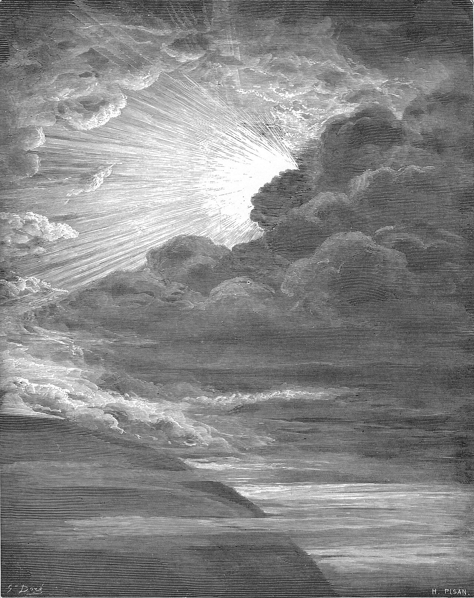

Jeremías 33 — La Traducción Mister

Jeremías 33:20. El capítulo argumenta desde «mi pacto del día y mi pacto de la noche», que el día y la noche vendrán a su tiempo mientras David tenga un hijo. Doré dibuja el primer día de Génesis 1:3, la luz que irrumpe de entre las nubes sobre el agua; la escena no está en este capítulo, y las nubes y los rayos son del grabador.

Notas del traductor — versículo por versículo
⭐ Todavía encerrado. La palabra viene por segunda vez, como la primera (capítulo 32), a un profeta que está bajo custodia: «encerrado en el patio de la guardia» está en dos versículos, este y Jeremías 39:15 (todavía sin página en estas páginas), y «en el patio de la guardia» está en ocho versículos, todos en la historia de este asedio: 32:2, 32:12, 33:1, 37:21, 38:6, 38:13, 38:28 y 39:15. La RV60 dice «estando él aún preso en el patio de la cárcel», la NVI «cuando este aún se hallaba preso en el patio de la guardia», la TNM 1987 «mientras todavía estaba encerrado en el Patio de la Guardia» y la TNM 2019 «mientras seguía preso en el Patio de la Guardia». Las promesas de este capítulo se dan desde un patio de prisión.
⚠ ¿Quién hace la? El versículo 2 dice osah, «la hace», y yotser otah, «la forma», y el hebreo nunca dice qué es «la». El estante pone un objeto: la RV60 dice «Así ha dicho Jehová, que hizo la tierra, Jehová que la formó para afirmarla», la NVI «el que hizo la tierra, la formó y la estableció con firmeza», la TNM 1987 «Jehová el Hacedor de la tierra, Jehová el Formador de ella para establecerla firmemente» y la TNM 2019 «el que hizo la tierra, Jehová, el que la formó y la estableció firmemente». La RV 1909 lo deja abierto: «Así ha dicho Jehová que la hizo, Jehová que la formó para afirmarla». El verbo hekhin, establecer, es el que sirve para una ciudad tanto como para un mundo, y los versículos siguientes son sobre una ciudad.
⭐ Clama a mí. «clama a mí, y te responderé» está en este único versículo, y su espejo en los Salmos es «me invocará y yo le responderé», que está en este único versículo, Salmo 91:15 (ya en estas páginas); Jeremías 29:12 (ya en estas páginas) tiene la misma invitación con otras palabras. La RV60 dice «Clama a mí, y yo te responderé, y te enseñaré cosas grandes y ocultas que tú no conoces», la NVI «Clama a mí y te responderé; te daré a conocer cosas grandes e inaccesibles que tú no sabes» y la TNM 2019 «Llámame, que yo te responderé y te contaré cosas grandes e incomprensibles».
⚠ Grandes e inaccesibles. «cosas grandes e inaccesibles», gedolot uvetsurot, está en este único versículo. Betsurot viene de batsar, cortar, fortificar: cosas amuralladas, fuera de alcance, como una ciudad fortificada. El estante tiene cuatro respuestas: la RV 1909 «cosas grandes y dificultosas», la RV60 «cosas grandes y ocultas», la NVI «cosas grandes e inaccesibles» y la TNM 1987 «cosas grandes e incomprensibles». Sean lo que sean, se han de decir, ve’aggidah lekha, a un hombre en prisión que está encerrado en sí mismo.
⚠ Casas usadas contra el asedio. «para las rampas de asalto y para la espada» está en este único versículo, y la palabrita el puede significar «contra» o «para». Así las casas de la ciudad y de los reyes se derriban o bien por las rampas y la espada, como la RV60 lo tiene, «derribadas con arietes y con hachas», o para usarse contra ellas, como lo tiene la NVI, «han sido derribados para levantar defensas contra las rampas de asalto y la espada». La TNM 1987 dice «se hallan demolidas a causa de los cercos de sitiar y a causa de la espada» y la TNM 2019 «están demolidas debido a las rampas de ataque y la espada». Una ciudad sitiada derriba sus casas para reforzar su muralla; esta traducción deja abiertos tanto el «para» como el «contra».
⚠ ¿Quién viene? El versículo siguiente empieza con un plural desnudo, ba’im, «vienen», sin sujeto. La RV60 hace de ellos los defensores: «porque vinieron para pelear contra los caldeos, para llenarlas de cuerpos de hombres muertos»; la NVI hace de ellos los babilonios: «Los babilonios vienen para atacar la ciudad y llenarla de cadáveres»; la TNM 1987 lo une al versículo anterior: «acerca de los que están viniendo para pelear contra los caldeos»; y la TNM 2019 dice «acerca de los que están viniendo a pelear contra los caldeos». En todas las lecturas los cadáveres llenan las casas de la ciudad, y el que los hirió es Jehová.
⭐ He escondido mi rostro. «he escondido mi rostro de esta ciudad» está en este único versículo. La RV60 dice «pues escondí mi rostro de esta ciudad a causa de toda su maldad», la NVI «he ocultado mi rostro de esta ciudad» y la TNM 1987 «he ocultado mi rostro de esta ciudad». El esconder el rostro es lo contrario de la invitación del versículo 3, donde Dios dice clama a mí: a una ciudad de la que ha escondido su rostro se le dice, sin embargo, que él responderá.
⭐ Sanidad. «haciendo subir para ella sanidad y medicina» está en este único versículo. Arukhah es la carne nueva que crece sobre una herida, y el verbo ma’aleh, «haciendo subir», es el verbo de ese crecimiento; Jeremías 30:17 (ya en estas páginas) tiene el mismo par, «yo te restauraré la salud». La RV60 dice «He aquí que yo les traeré sanidad y medicina; y los curaré», la NVI «les daré salud y los curaré», la TNM 1987 «Aquí voy a hacer subir para ella un recobro y salud» y la TNM 2019 «Voy a curarla y a devolverle la salud».
⚠ Abundancia, o una oración. «abundancia de paz y de verdad», ‘atteret shalom ve’emet, está en este único versículo, y la primera palabra es rara. La RV60 dice «y les revelaré abundancia de paz y de verdad», la NVI «haré que disfruten de abundante paz y seguridad», la TNM 1987 «una abundancia de paz y verdad» y la TNM 2019 «darles paz y seguridad en abundancia». El Douay inglés imprime «la oración de la paz y la verdad», que lee las mismas letras como una forma de ‘atar, suplicar. Esta traducción conserva «abundancia» y dice aquí que la palabra tiene otra lectura.
⭐ Tres palabras para pecado en un versículo. La limpieza del versículo 8 las usa todas: «con que pecaron contra mí y con que se rebelaron contra mí» está en este único versículo, después de ‘avon, maldad, dos veces. La RV60 dice «Y los limpiaré de toda su maldad con que pecaron contra mí; y perdonaré todos sus pecados con que contra mí pecaron, y con que contra mí se rebelaron», la NVI «Los purificaré de todas las iniquidades que cometieron contra mí», la TNM 1987 «Y los purificaré, sí, de todo su error» y la TNM 2019 «perdonaré toda la culpa por sus pecados y sus ofensas contra mí». Los dos verbos, tiharti, limpiado, y salachti, perdonado, responden a dos cosas distintas: la mancha y la deuda.
⭐ Un nombre de gozo. «un nombre de gozo, de alabanza y de esplendor» está en este único versículo, y su pariente más antiguo es lishem ultehillah ultifaret, «para nombre, alabanza y esplendor», en Jeremías 13:11 (todavía sin página en estas páginas), donde el cinto de lino debía ser lo que Israel era para Jehová. La RV60 dice «por nombre de gozo, de alabanza y de gloria, entre todas las naciones de la tierra», la TNM 1987 «un nombre de alborozo, una alabanza y una hermosura» y la NVI «motivo de gozo, alabanza y gloria a la vista de todas las naciones de la tierra». Las naciones oyen del bien y temen y tiemblan, la RV60 «y temerán y temblarán de todo el bien y de toda la paz»: los mismos dos verbos, dichos de una ciudad que estaba a punto de caer.
⭐ Las voces vuelven. «la voz del novio y la voz de la novia» está en cuatro versículos, y también «la voz de gozo y la voz de alegría»: Jeremías 7:34 y 16:9 (todavía sin página en estas páginas), Jeremías 25:10 (ya en estas páginas) y este. En los tres primeros, Jehová dice que hará cesar esas voces; en el cuarto dice que volverán a oírse. La RV60 dice «voz de gozo y de alegría, voz de desposado y voz de desposada», la NVI «el grito de gozo y alegría, el canto del novio y de la novia» y la TNM 1987 «el sonido del alborozo y el sonido del regocijo, la voz del novio y la voz de la novia». El lugar que estaba «sin hombre y sin animal» (versículo 10, tres veces) es el lugar donde se oye la boda.
⭐ Dad gracias. Los invitados a la boda han de cantar «dad gracias a Jehová de los ejércitos, porque Jehová es bueno», que está en este único versículo, y la línea que sigue, «porque para siempre es su amor leal», está en más de treinta versículos, entre ellos Salmo 118:1 (ya en estas páginas) y cada versículo del Salmo 136 (todavía sin página en estas páginas); el Salmo 100:5 (ya en estas páginas) la tiene en una forma cercana. La RV60 dice «Alabad a Jehová de los ejércitos, porque Jehová es bueno, porque para siempre es su misericordia», la NVI «Den gracias al Señor de los Ejércitos, porque el Señor es bueno», la TNM 1987 «¡Elogien a Jehová de los ejércitos, porque Jehová es bueno» y la TNM 2019 «¡Denle gracias a Jehová de los ejércitos, porque Jehová es bueno; su amor leal dura para siempre!». Se promete una liturgia del templo para una ciudad sin templo en pie.
⭐ Una ofrenda de acción de gracias. «una ofrenda de acción de gracias a la casa de Jehová», todah beit YHWH, está en dos versículos: este, y Jeremías 17:26 (ya en estas páginas), donde era una de las ofrendas que vendrían si guardaban el sábado. Allí era una condición; aquí es una promesa. El versículo cierra entonces con la promesa que enmarca todo el capítulo, «haré volver la cautividad de la tierra como al principio», que está en este único versículo, la RV60 «Porque volveré a traer los cautivos de la tierra como al principio» y la NVI «Haré que vuelvan del cautiverio de este país».
⭐ Pastores que hacen echar a los rebaños. La ruina del versículo 10 se contesta con ovejas: «un pastizal de pastores que hacen echar a los rebaños». El participio marbitsim, «que hacen echar», es el verbo del Salmo 23:2 (ya en estas páginas), yarbitseni, «me hace descansar». La RV60 dice «cabañas de pastores que hagan pastar sus ganados», la RV 1909 «cabañas de pastores que hagan tener majada á ganados», la NVI «habrá pastos en donde los pastores harán descansar a sus rebaños», la TNM 1987 «el apacentadero de los pastores que están haciendo que el rebaño se eche» y la TNM 2019 «volverá a haber pastos para que los pastores lleven a sus rebaños a descansar». La promesa de Jeremías 23:4 (ya en estas páginas), de que Jehová pondrá pastores sobre su rebaño para que no falte ninguna, se cumple en la misma imagen.
⭐ Contados. «bajo las manos del que cuenta» está en este único versículo. Es el recuento del pastor a la puerta, como en Levítico 27:32 (ya en estas páginas), donde se cuenta el décimo animal que pasa. La RV60 dice «aún pasarán ganados por las manos del que los cuente», la RV 1909 «aun pasarán ganados por las manos de los contadores», la NVI «las ovejas volverán a ser contadas por los pastores» y la TNM 1987 «todavía pasarán adelante rebaños bajo las manos del que está tomando la cuenta». La lista de regiones, «en las ciudades de la región montañosa, en las ciudades de la tierra baja y en las ciudades del Néguev», está en este único versículo, en esta forma exacta; su vecino es Jeremías 32:44 (todavía sin página en estas páginas), y la misma geografía fue la lista de ofrendas a Jerusalén en Jeremías 17:26 (ya en estas páginas). La RV60 dice «En las ciudades de las montañas, en las ciudades de la Sefela, en las ciudades del Neguev» y la RV 1909 «en las ciudades de los campos, y en las ciudades del mediodía».
⚠ El griego se detiene aquí. Los versículos 14–26 no están en la traducción griega de Jeremías, que es más breve que el hebreo, y sí están en el hebreo que leemos. Esta traducción sigue el hebreo y dice aquí que el texto griego más breve no tiene nada después del versículo 13.
⭐ ¿Establecer, o cumplir? «estableceré la buena palabra» está en este único versículo, y el verbo es heqim, levantar, hacer que se mantenga en pie. La RV60 dice «yo confirmaré la buena palabra que he hablado», la NVI «cumpliré la promesa de bendición que hice», la TNM 1987 «ciertamente llevaré a cabo la buena palabra que he hablado» y la TNM 2019 «cumpliré la buena promesa que hice». Una palabra que se establece es una que se ha dicho y queda en pie esperando.
⭐ El Renuevo. «un Renuevo de justicia» está en este único versículo, y su hermano es Jeremías 23:5 (ya en estas páginas), tsemach tsaddiq, «un Renuevo justo»; Zacarías 3:8 (ya en estas páginas) lo llamará «mi siervo el Renuevo». La palabra es tsemach, un brotar. La RV60 dice «haré brotar a David un Renuevo de justicia», la RV 1909 «haré producir á David Pimpollo de justicia», la NVI «haré que brote de David un Renuevo justo» y la TNM 1987 «haré que brote para David un brote justo».
⚠ ¿De quién es el nombre? «Jehová Es Nuestra Justicia» está en dos versículos: Jeremías 23:6, donde es el nombre del rey, y aquí, donde es el nombre de la ciudad. La RV60 dice «se le llamará: Jehová, justicia nuestra», la RV 1909 «esto es lo que la llamarán: Jehová, justicia nuestra», la TNM 1987 «Y esto es lo que se le llamará: Jehová Es Nuestra Justicia» y la TNM 2019 «Y así es como la llamarán: Jehová Es Nuestra Justicia»; la NVI dice «Y será llamada así». El hebreo dice lah, «a ella». Y «habitará segura» está en este único versículo, donde 23:6 tenía yishkon, «habitará», de Israel: la misma promesa ha pasado del pueblo a la ciudad. La RV60 dice «Jerusalén habitará segura».
⭐ Nunca cortado. «no será cortado a David un hombre» está en este único versículo, y la vieja promesa que repite, «no será cortado a ti un hombre de delante de mí», está en dos versículos: 1 Reyes 8:25 (ya en estas páginas), en la oración de Salomón, y 2 Crónicas 6:16 (todavía sin página en estas páginas); la promesa detrás de ambos es 2 Samuel 7:16 (ya en estas páginas). La RV60 dice «No faltará a David varón que se siente sobre el trono de la casa de Israel», la NVI «Nunca faltará a David un descendiente que ocupe el trono del pueblo de Israel», la TNM 1987 «No será cortado, en el caso de David, un hombre que haya de sentarse sobre el trono de la casa de Israel» y la TNM 2019 «Siempre habrá un descendiente de David que se siente en el trono de la casa de Israel». La palabra es karat, el verbo de cortar un pacto, de modo que la promesa se dice con el vocabulario de los pactos.
⭐ Y los levitas. La misma promesa se hace a los sacerdotes, los levitas: «y haga sacrificio, todos los días» está en este único versículo. La RV60 dice «y que haga sacrificio todos los días», la NVI «presente sacrificios todos los días» y la TNM 1987 «y de hacer sacrificio siempre». El capítulo ha prometido ya a David un hombre en el trono y a los levitas un hombre en el altar, mientras haya días.
⭐ Un pacto con el día. «mi pacto del día y mi pacto de la noche» está en este único versículo, y es el argumento del capítulo: si el pacto del día y de la noche puede romperse, de modo que el día y la noche no vengan a su tiempo, entonces puede romperse el pacto con David. La RV 1909 dice «Si pudieres invalidar mi concierto con el día y mi concierto con la noche», la RV60 «Si pudiereis invalidar mi pacto con el día y mi pacto con la noche», la NVI «Si ustedes pudieran romper mi pacto con el día y mi pacto con la noche» y la TNM 1987 «Si ustedes pudieran romper mi pacto del día y mi pacto de la noche». La señal es la dada tras el diluvio (Génesis 8:22, ya en estas páginas): el día y la noche no cesarán. El mismo argumento se hace desde el sol, la luna y las estrellas en Jeremías 31:35–36 (ya en estas páginas, donde los números hebreos van uno detrás).
⭐ Estrellas y arena. «no puede contarse el ejército de los cielos» está en este único versículo, y «ni medirse la arena del mar» está en este único versículo: las dos imágenes de la promesa a Abraham, las estrellas en Génesis 15:5 y la arena con las estrellas en Génesis 22:17 (ambos ya en estas páginas, todavía sin página en español), se dan aquí a David y a los levitas. La RV60 dice «Como no puede ser contado el ejército del cielo, ni la arena del mar se puede medir, así multiplicaré la descendencia de David mi siervo», la NVI «como las incontables estrellas del cielo y los granos de arena del mar» y la TNM 1987 «Tal como no puede contarse el ejército de los cielos, ni medirse la arena del mar». ⚠ Tseva hashamayim, «el ejército de los cielos», es una frase que está en más de una docena de versículos y es a menudo lo adorado (Deuteronomio 4:19, 2 Reyes 17:16, Jeremías 8:2 y 19:13, ya en estas páginas, todavía sin página en español); aquí es solo algo que contar.
⚠ Las dos familias. «las dos familias» está en este único versículo, y el hebreo no dice cuáles dos. La NVI dice «los dos reinos que había escogido», es decir, Israel y Judá; la RV60 conserva «Dos familias que Jehová escogiera ha desechado», la TNM 1987 «A las dos familias que Jehová ha escogido, también las rechazará» y la TNM 2019 «Jehová rechazará a las dos familias que eligió». Podrían ser también la casa de David y la casa de Leví de los versículos 17–18; esta traducción imprime «familias» y dice aquí que el hebreo permite ambas. Lo que dice este pueblo es lo que el pueblo decía en el exilio: que Jehová ha desechado a las dos. La RV60 dice «Y han tenido en poco a mi pueblo, hasta no tenerlo más por nación».
⭐ Isaac, escrito con una risa. «Abraham, Isaac y Jacob» está en este único versículo con esta ortografía: Isaac se escribe Yischaq, con las letras del verbo «reír», donde la ortografía usual es Yitzchaq. La RV60 dice «quien sea señor sobre la posteridad de Abraham, de Isaac y de Jacob», la NVI «para gobernar sobre la descendencia de Abraham, Isaac y Jacob» y la TNM 1987 «gobernantes sobre la descendencia de Abrahán, Isaac y Jacob». El juramento de los versículos 25–26 se dice dos veces, con el pacto del día y de la noche detrás del pacto con David, y las mismas dos palabras, em’as, «desecharía», responden al vayyim’asem, «los desechó», de lo que dice el pueblo.
⚠ Volver, o restaurar. El capítulo termina en «porque haré volver a sus cautivos», que está en este único versículo, donde el texto imprime dos formas del verbo: la forma escrita es ashuv, «volveré», y la forma que se lee es ashiv, «haré volver». La promesa es la de los versículos 7 y 11, «y haré volver la cautividad de Judá», que está en este único versículo, y recorre los capítulos 29 a 33 (29:14 y 30, ya en estas páginas). La RV60 dice «Porque haré volver sus cautivos, y tendré de ellos misericordia», la NVI «¡Pero yo haré volver a sus cautivos y les tendré compasión!», la TNM 1987 «Pues recogeré a sus cautivos y ciertamente les tendré piedad» y la TNM 2019 «Porque traeré de vuelta a sus cautivos y les tendré compasión». La última palabra es richamtim, «tendré misericordia de ellos», de rechem, el vientre.
Patrones que vale la pena llevar adelante
Dónde esta traducción mantiene las palabras exactas y distintas: «cautividad» para shevut en los versículos 7, 11 y 26, para que la promesa conserve una sola palabra; «la buena palabra» para hadavar hatov en el versículo 14; «Renuevo» para tsemach en el 15; «cortado» para karat en los versículos 17 y 18; «pacto» para berit en los versículos 20, 21 y 25; «desechar» para ma’as en los versículos 24 y 26; «amor leal» para chesed en el versículo 11. El ketiv y el qere de los versículos 8 y 26 se muestran en las notas y no en el texto del versículo.
Ecos pagados. Génesis 8:22, 15:5 y 22:17; Levítico 27:32; 2 Samuel 7:16; 1 Reyes 8:25; Salmos 23:2, 91:15, 100:5 y 118:1; Jeremías 17:26, 19:13, 23:4–6, 25:10, 29:12–14, 30:17 y 31:35–36; Zacarías 3:8.
Ecos plantados. Jeremías 7:34, 13:11, 16:9, 32:44 y 39:15; Salmo 136:1; 2 Crónicas 6:16. Ninguno de estos está todavía en estas páginas.
⚠ Una nota sobre el orden: Jeremías está en estas páginas en los capítulos 1, 2, 17, 18, 19, 20, 21, 22, 23, 24, 25, 26, 27, 28, 29, 30, 31 y 33, elegidos por lo mucho que se lee un pasaje y no en orden. El hilo secuencial no cambia: el siguiente en la secuencia es Jeremías 3.